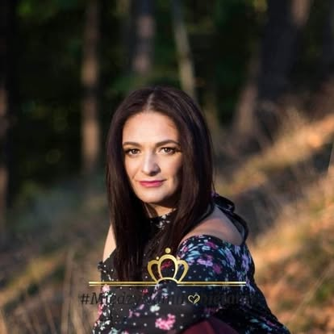
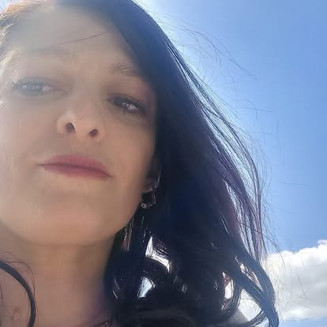
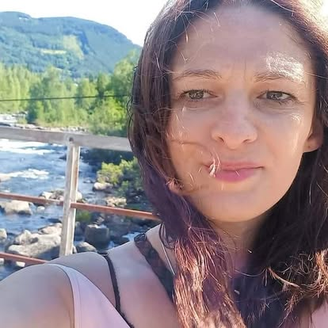
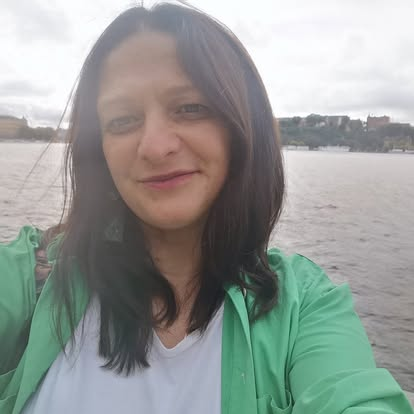
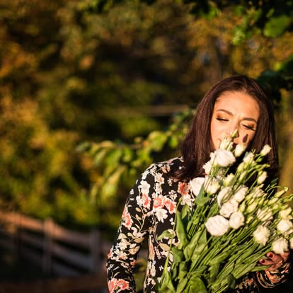

Refleksje o życiu, miłości, sile i pięknie codzienności
Galeria
Chwile zatrzymane w kadrze





Ta strona korzysta z plików cookies oraz localStorage w celu zapewnienia prawidłowego działania serwisu, zgodnie z art. 173 ustawy Prawo telekomunikacyjne oraz Rozporządzeniem RODO (UE 2016/679). Kontynuując przeglądanie, wyrażasz zgodę na ich używanie. Polityka prywatności